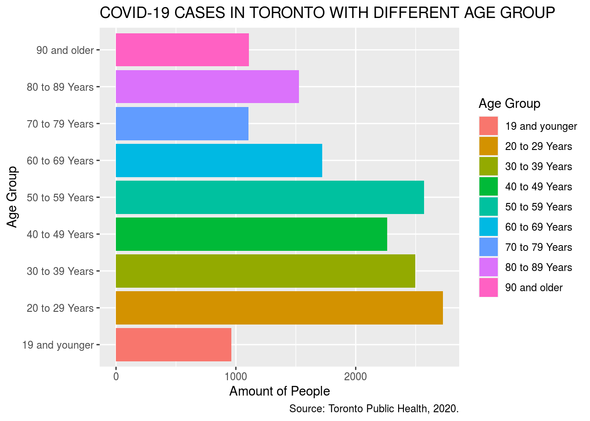
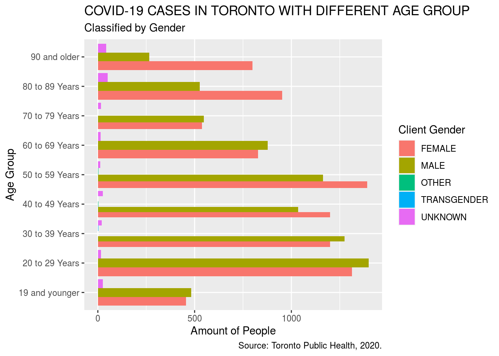
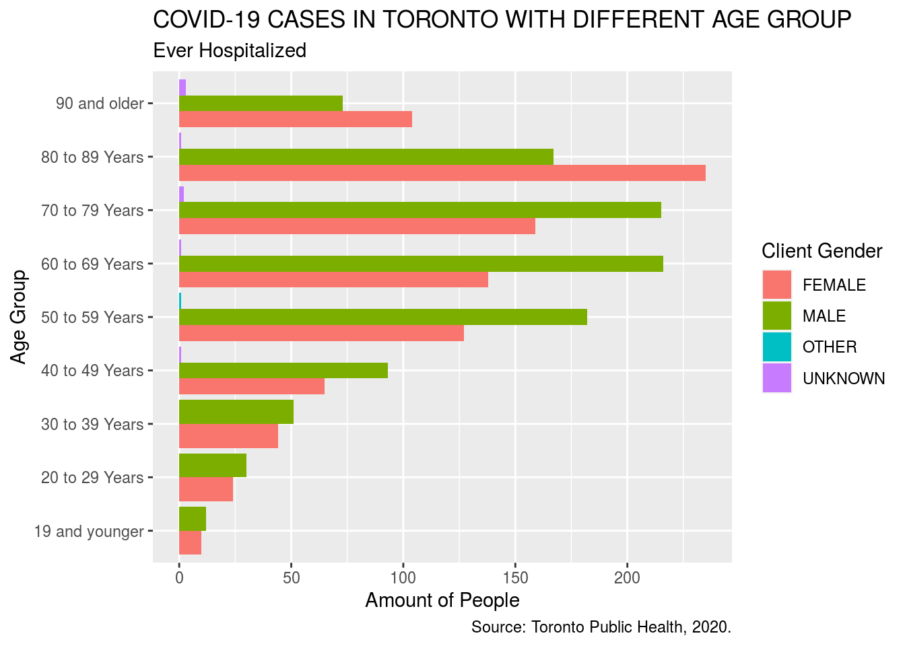
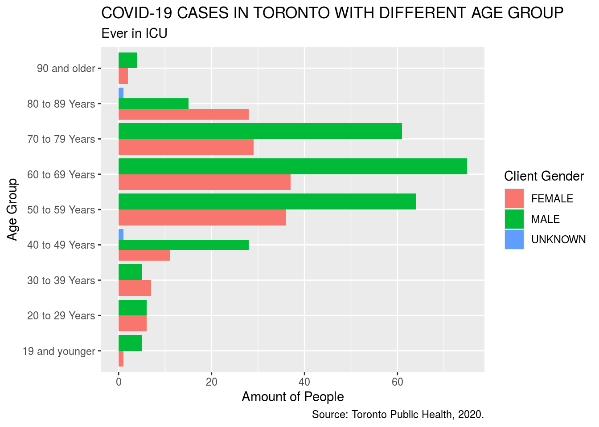
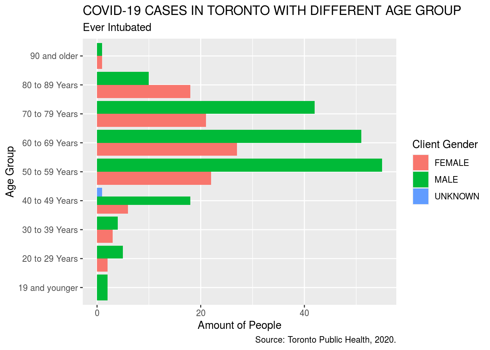
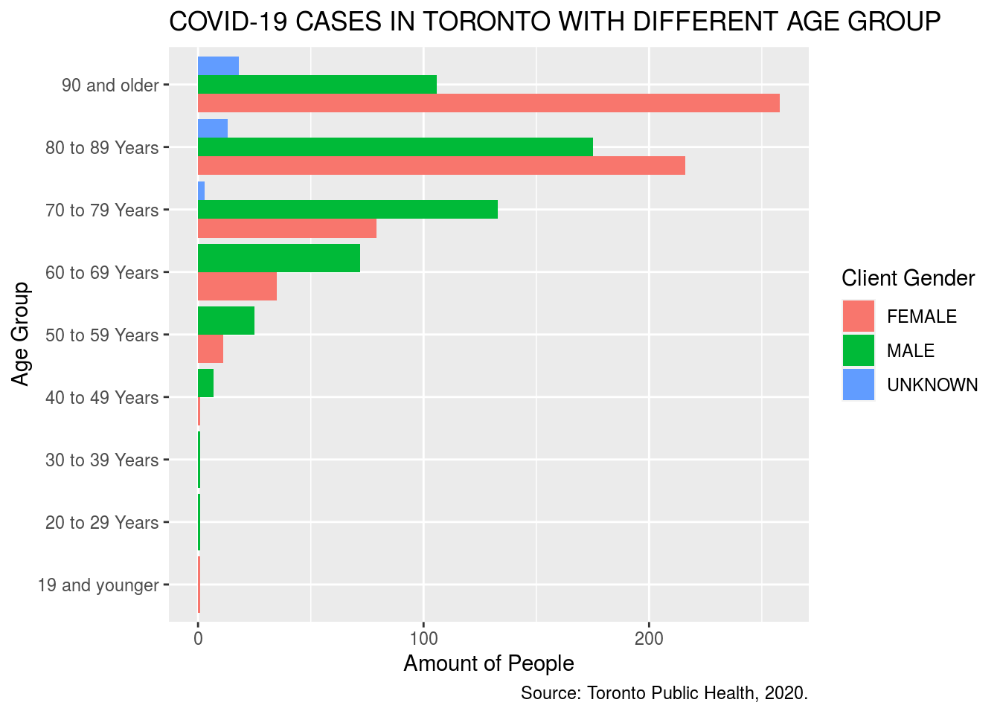

Introduction
Since the first case reported in January 2020, people around the world are suffering the plague caused by COVID-19 and it is still causing deaths. As of the moment when the study is conducted, there have been more than 32 millions cumulative confirmed cases worldwide, which caused almost 1 million of death. Canada is also experiencing an ongoing outbreak, with more than 150,000 cumulative confirmed cases caused over 9,000 deaths. Due to limited knowledge about the virus, there is no confirmed effective medicine or vaccine so far. Therefore it is significant to analyze the characteristics of the virus in different dimensions. By looking at specifically the age and gender feature of infected cases in Toronto, we find that both of the factors closely associate with the spread of COVID-19. Note that all data in the study is based on COVID-19 CASES IN TORONTO ANALYSIS dataset (Gelfand (2020)).
I focus my study on finding the relationship between age and gender versus the possibility and severity.To represent the severity, I used the data of whether the confirmed case have ever been hospitalized, in ICU or Intubated. Despite the fact that more younger people got infected in Toronto, elder people tend to experience a more severe outcome once got infected. In terms of gender, even though female is found to be more likely to get infected, male demonstrated a higher rate to be in ICU and intubated.
The weakness of the study is obvious, as the sampling population is too local to be globally representative. Moreover, due to the quick evolution process of the virus, some earlier data might be outdated to generalize the characteristics of the virus on current stage. More precise analysis is required for a globally sampled population.
Data Discussion
The COVID-19 CASES IN TORONTO ANALYSIS dataset include basic biological information, geographic information and severity information of all cases reported by Toronto Public Health. The dataset contains 17872 observations of 18 variables where each observation summary the information of an individual case. In our study, we only focus on the following 7 variables:
Age Group: The age at the time when the case is confirmed.Age groups (in years): ≤19, 20-29, 30-39, 40-49, 50-59, 60-69, 70-79, 80-89, 90+, unknown (blank)
Classification: Whether the case is medically confirmed to be infected or probable to be infected, according to the Ontario provincial case definition. Classification:CONFIRMED, PROBABLE
Client Gender: The self-reported gender of the confirmed case. Client Gender:FEMALE, MALE, OTHER, TRANSGENDER, UNKNOWN
Outcome: The status of the case as of current date. Outcome: Fatal, Resolved, Active(case that is neither fatal nor resolve)
Ever Hospitalized: Whether the case was hospitalized caused by their COVID-19 infection, including currently hospitalized, resolved and fatal cases.
Ever in ICU: Whether the case was in ICU caused by their COVID-19 infection, including currently hospitalized, resolved and fatal cases.
Ever Intubated: Whether the case was Intubated caused by their COVID-19 infection, including currently hospitalized, resolved and fatal cases.

The graph provides us a overview about the distribution of the confirmed case in term of different age groups. Through the graph we can see that the people from 20-29 years old contribute the largest portion of infected cases whereas people younger than 20 years old is least likely to get infected. People from 20-59 years old is much more likely to get infected comparing to other age groups.

The graph above explores the effect of gender in each of the age group. We can see that for people older than 80, females are remarkably more likely to get infected than males. Whereas in other group ages gender does not make obvious differences, infected males tend to be slightly more than females.

The graph above demonstrates the number of cases in Toronto that have been ever hospitalized in different age groups. Similarly, females who are older than 80 years old have the higher rate to be hospitalized compared to male, but for people who are younger than 80 years old, males are more likely to be hospitalized than females. If we look at the age from 50 to 59 years old, it is surprisingly to have more males hospitalized than females, whereas more females were infected in this age range. Moreover, if we compared the data with the total number of people that get infected in different age group, we can see that despite the fact that less people who are older than 60 years old were infected, they are much more likely to be hospitalized once get infected.


The overall distribution of people that have ever been in ICU or intubated is very similar. Males from 50 to 79 years old displays a much higher rate in much likely to be in ICU or inubated.

As of the fatal rate, we can see that the people younger than 50 years old is very less likely to die due to the COVID-19. Elder people contributed the most parts of death caused by the virus. We can see that for people elder than 80 years old, the virus is more fatal to female.
Weakness
Our analysis is based on the assumption that the base number of different age group is the same. However it is not realistic. There are also other potential lurking variables, for example, younger people is more willing to go out comparing with elder people, which might caused their higher possibility of get infected rather than the characteristic of the virus.
Reference
Gelfand, Sharla. 2020. Opendatatoronto: Access the City of Toronto Open Data Portal. https://CRAN.R-project.org/package=opendatatoronto.